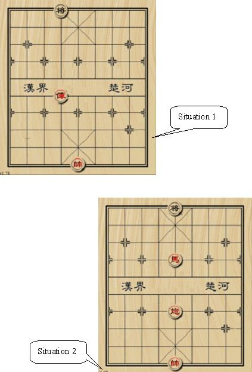

HDU4121. Xiangqi
内存限制：2000/1000 MS (Java/Others) 时间限制：32768/32768 K (Java/Others)
题目描述
Xiangqi is one of the most popular two-player board games in China. The game represents a battle between two armies with the goal of capturing the enemy’s “general” piece. In this problem, you are given a situation of later stage in the game. Besides, the red side has already “delivered a check”. Your work is to check whether the situation is “checkmate”.
Now we introduce some basic rules of Xiangqi. Xiangqi is played on a 10×9 board and the pieces are placed on the intersections (points). The top left point is (1,1) and the bottom right point is (10,9). There are two groups of pieces marked by black or red Chinese characters, belonging to the two players separately. During the game, each player in turn moves one piece from the point it occupies to another point. No two pieces can occupy the same point at the same time. A piece can be moved onto a point occupied by an enemy piece, in which case the enemy piece is "captured" and removed from the board. When the general is in danger of being captured by the enemy player on the enemy player’s next move, the enemy player is said to have "delivered a check". If the general's player can make no move to prevent the general's capture by next enemy move, the situation is called “checkmate”.

We only use 4 kinds of pieces introducing as follows:
 General: the generals can move and capture one point either vertically or horizontally and cannot leave the “palace” unless the situation called “flying general” (see the figure above). “Flying general” means that one general can “fly” across the board to capture the enemy general if they stand on the same line without intervening pieces.
General: the generals can move and capture one point either vertically or horizontally and cannot leave the “palace” unless the situation called “flying general” (see the figure above). “Flying general” means that one general can “fly” across the board to capture the enemy general if they stand on the same line without intervening pieces.
 Chariot: the chariots can move and capture vertically and horizontally by any distance, but may not jump over intervening pieces
Chariot: the chariots can move and capture vertically and horizontally by any distance, but may not jump over intervening pieces
 Cannon: the cannons move like the chariots, horizontally and vertically, but capture by jumping exactly one piece (whether it is friendly or enemy) over to its target.
Cannon: the cannons move like the chariots, horizontally and vertically, but capture by jumping exactly one piece (whether it is friendly or enemy) over to its target.
 Horse: the horses have 8 kinds of jumps to move and capture shown in the left figure. However, if there is any pieces lying on a point away from the horse horizontally or vertically it cannot move or capture in that direction (see the figure below), which is called “hobbling the horse’s leg”.
Horse: the horses have 8 kinds of jumps to move and capture shown in the left figure. However, if there is any pieces lying on a point away from the horse horizontally or vertically it cannot move or capture in that direction (see the figure below), which is called “hobbling the horse’s leg”.

Now you are given a situation only containing a black general, a red general and several red chariots, cannons and horses, and the red side has delivered a check. Now it turns to black side’s move. Your job is to determine that whether this situation is “checkmate”.
Now we introduce some basic rules of Xiangqi. Xiangqi is played on a 10×9 board and the pieces are placed on the intersections (points). The top left point is (1,1) and the bottom right point is (10,9). There are two groups of pieces marked by black or red Chinese characters, belonging to the two players separately. During the game, each player in turn moves one piece from the point it occupies to another point. No two pieces can occupy the same point at the same time. A piece can be moved onto a point occupied by an enemy piece, in which case the enemy piece is "captured" and removed from the board. When the general is in danger of being captured by the enemy player on the enemy player’s next move, the enemy player is said to have "delivered a check". If the general's player can make no move to prevent the general's capture by next enemy move, the situation is called “checkmate”.
We only use 4 kinds of pieces introducing as follows:
General: the generals can move and capture one point either vertically or horizontally and cannot leave the “palace” unless the situation called “flying general” (see the figure above). “Flying general” means that one general can “fly” across the board to capture the enemy general if they stand on the same line without intervening pieces.Chariot: the chariots can move and capture vertically and horizontally by any distance, but may not jump over intervening piecesCannon: the cannons move like the chariots, horizontally and vertically, but capture by jumping exactly one piece (whether it is friendly or enemy) over to its target.Horse: the horses have 8 kinds of jumps to move and capture shown in the left figure. However, if there is any pieces lying on a point away from the horse horizontally or vertically it cannot move or capture in that direction (see the figure below), which is called “hobbling the horse’s leg”.Now you are given a situation only containing a black general, a red general and several red chariots, cannons and horses, and the red side has delivered a check. Now it turns to black side’s move. Your job is to determine that whether this situation is “checkmate”.
输入格式
The input contains no more than 40 test cases. For each test case, the first line contains three integers representing the number of red pieces N (2<=N<=7) and the position of the black general. The following n lines contain details of N red pieces. For each line, there are a char and two integers representing the type and position of the piece (type char ‘G’ for general, ‘R’ for chariot, ‘H’ for horse and ‘C’ for cannon). We guarantee that the situation is legal and the red side has delivered the check.
There is a blank line between two test cases. The input ends by 0 0 0.
There is a blank line between two test cases. The input ends by 0 0 0.
输出格式
For each test case, if the situation is checkmate, output a single word ‘YES’, otherwise output the word ‘NO’.
样例
样例输入
2 1 4
G 10 5
R 6 4
3 1 5
H 4 5
G 10 5
C 7 5
0 0 0样例输出
YES
NO
Hint

In the first situation, the black general is checked by chariot and “flying general”.
In the second situation, the black general can move to (1, 4) or (1, 6) to stop check.
See the figure above.